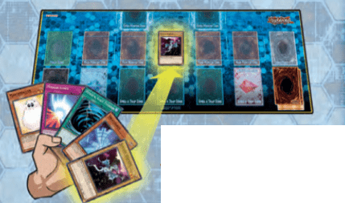
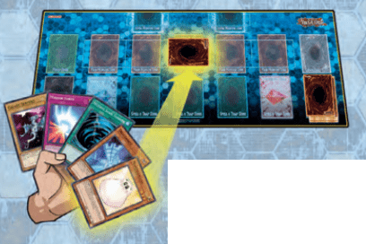
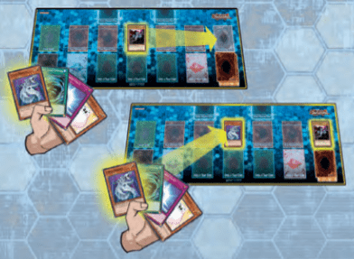
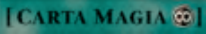
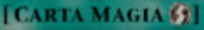
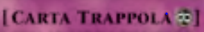

APPROFONDIMENTO CARTE
In questo blocco di regole andremo ad analizzare nel dettaglio i funzionamenti e le caratteristiche delle diverse carte presenti nel gioco. Seguiremo quest’ordine: partiremo dalle carte presenti nel tuo main deck e procederemo verso le carte presenti nel tuo extra deck. Di fondamentale importanza aver letto la sezione delle regole che precede questa! (la trovi qui). Se sei pronto a cominciare direi che puoi iniziare la lettura!
Come Utilizzare i Mostri
Ad ogni turno hai o un’evocazione normale o un posizionamento. Questa azione ti permette di utilizzare uno dei mostri che hai nella tua mano. Per effettuare un’evocazione normale si mette un mostro in posizione di attacco scoperto sul terreno (puoi evocare normalmente soltanto mostri di livello 4 o inferiore).
Se invece si vuole giocare in maniera difensiva si può posizionare un mostro coperto in posizione di difesa (posizionamento).
 Se volessimo evocare un mostro di livello più alto dovremmo fare un’evocazione tramite tributo, ovvero sacrificare un mostro presente sul nostro terreno per evocare un mostro di livello 5 o 6 oppure sacrificare due mostri sul terreno per evocare un mostro superiore al livello 6. Ovviamente durante un turno è possibile effettuare una sola di queste 3 azioni: evocare normalmente, posizionare o evocare tramite tributo.
Alcuni mostri con effetto o carte magia o carte trappola permettono di effettuare delle evocazioni speciali! Non c’è limite al numero di evocazioni speciali che si possono compiere durante un turno. Inoltre, l’azione di evocazione normale è comunque disponibile anche se decidiamo di evocare specialmente. Si può scegliere se evocare specialmente in posizione di attacco o di difesa, ma in entrambi i casi la carta va messa scoperta sul terreno (fanno eccezione gli effetti dov’è specificata la posizione in cui il mostro verrà evocato specialmente).
Le Carte Magia & Trappola
I mostri non ti basteranno per vincere i duelli, sarà necessario utilizzare gli effetti delle magie e delle trappole. Le carte magia sono utilizzabili durante il tuo turno. È sufficiente posizionarle in una delle zone magia & trappola del terreno. Una volta applicato l’effetto la carta magia va scartata nel cimitero (vedi eccezioni magie continue). Le carte trappola sono più lente rispetto alle carte magia, in quanto devono rimanere almeno un turno coperte sul terreno prima di poter essere utilizzate, hanno però il vantaggio che possono essere utilizzate anche durante il turno dell’avversario. Questa abilità rende le trappole ideali per mettere i bastoni tra le ruote degli avversari!
Le Carte Magia Particolari
Sotto il nome della carta magia potrebbe essere presente un simbolo che dà alla carta magia alcune qualità. Le carte magia infatti possono essere: equipaggiamento, continue, terreno, rapide.
- Carte Magia Equipaggiamento
-
Le carte magia equipaggiamento vengono assegnate ad un mostro e rimangono nella zona magia & trappola fino a quando il mostro non lascia il terreno. In questo modo il mostro equipaggiato gode di un potenziamento che può durare più di un turno.
- Carte Magia Continue
-

Le carte magia continue sono contraddistinte dal simbolo dell’infinito, quando una di queste magie viene attivata il suo effetto perdura fino a quando la carta rimane sul terreno.
- Carte Magia Terreno
-
Le carte magia terreno sono contraddistinte dal simbolo della rosa dei venti, quando ne attivi una va messa in quella zona. Ogni giocatore ha una zona terreno e la magia rimane in quella zona e applica i suoi effetti fino a quando non lascia il terreno. Le magie terreno differiscono dalle continue in quanto i loro effetti vengono applicati ad entrambi i giocatori. Inoltre se un giocatore vuole attivare un'altra magia terreno anche se la sua zona terreno è occupata lo può fare scartando la carta che occupa la zona magie terreno.
- Carte Magia Rapide
-

Le carte magia rapide sono contraddistinte dal simbolo del fulmine, possono essere giocate in qualsiasi fase del tuo turno e se vengono posizionate coperte possono essere utilizzate anche durante il turno del tuo avversario (come se fossero trappole).
Le Carte Trappola Particolari
Come per le carte magia anche le carte trappola possono avere comportamenti particolari, esistono infatti carte trappola continue e carte contro-trappola.
- Carte Trappola Continue
-

Le carte continue funzionano come le magie continue, quando vengono attivate rimango sul terreno e continuano ad applicare il loro effetto fino a quando non vengono distrutte.
- Carte Contro-Trappola
-

Le carte contro-trappola sono contraddistinte da una freccia, queste carte riescono ad annullare gli effetti delle carte avversarie, risultano perciò molto utili per fermare le combo degli avversari!
La Struttura del turno di Gioco
Durante ogni tuo turno di gioco attraverserai delle diverse fasi. Durante queste fasi si possono fare e possono accadere diverse cose. In questa sezione andremo a vedere nel dettaglio ogni fase. Le fasi di ogni turno sono sei: draw phase, standby phase, main phase 1, battle phase (ed eventuale damage step), main phase 2 ed end phase.

- Durante la tua draw phase andrai a pescare una carta dal tuo main deck, in questa fase potrebbero essere applicati degli effetti di alcune carte che potrebbero alterare la tua pescata. Inoltre il primo giocatore che inizia la partita dovrà saltare questa fase.
- La standby phase è una fase intermedia tra la draw phase e la main phase 1. In questa fase di passaggio si applicano solamente gli effetti che la nominano.
- Durante la tua main phase 1 puoi: effettuare la tua evocazione normale o posizionamento, effettuare quante evocazioni speciali desideri, attivare effetti di carte magia o trappola (non serve seguire l’ordine in cui queste azioni sono elencate).
- Durante la tua battle phase andrai a dichiarare eventuali attacchi verso il tuo avversario, ogni qual volta si procede ad effettuare il calcolo dei danni si parla di damage step. Alcune carte hanno effetti che si applicano durante il damage step quindi è opportuno ricordarsi che è una fase che si verifica solamente in caso di un attacco durante la battle phase. Ovviamente il giocatore che inizierà la partita dovrà saltare la battle phase del suo primo turno.
- Nella main phase 2 puoi eseguire le stesse azioni della main phase 1 preparandoti magari per difenderti contro il futuro turno dell’avversario. Ovviamente se non hai fatto la tua evocazione normale durante la main phase 1 lo puoi fare adesso.
- Durante la end phase stai passando il tuo turno all’avversario, si applicano eventuali effetti che citano questa phase e poi il tuo avversario procede con la propria draw phase . Inoltre se hai più di 6 carte scarti tutte le carte in eccesso.
Ora sei pronto per scoprire la pagina degll'extra deck!